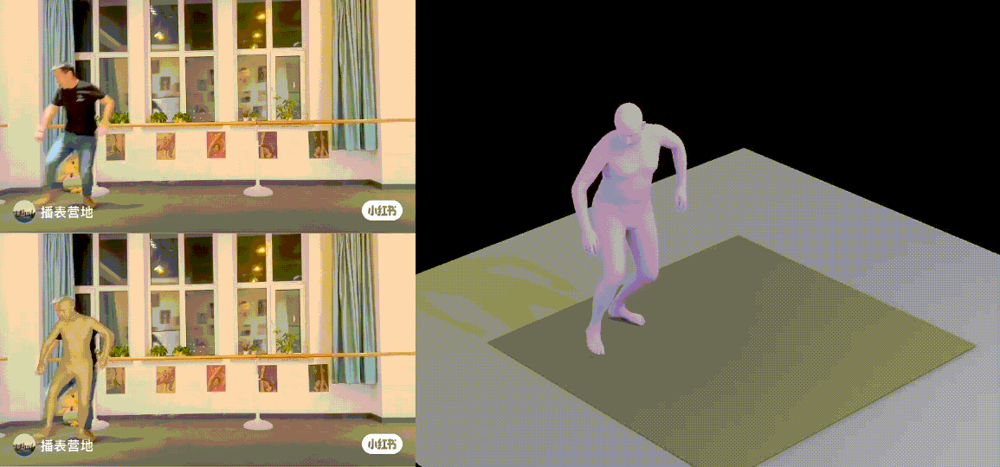
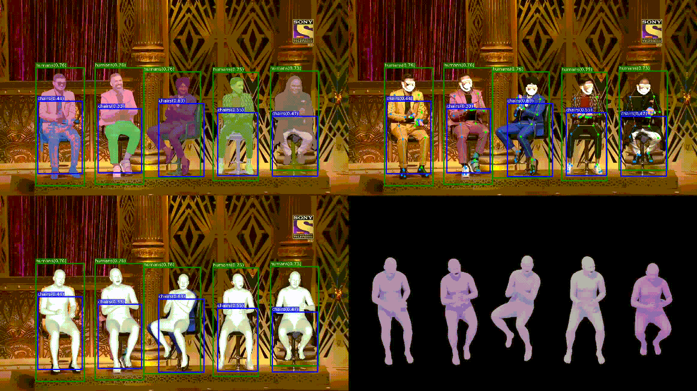
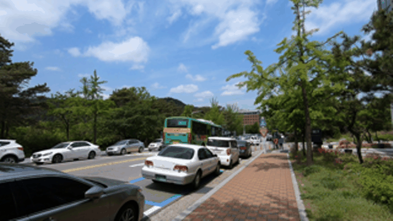
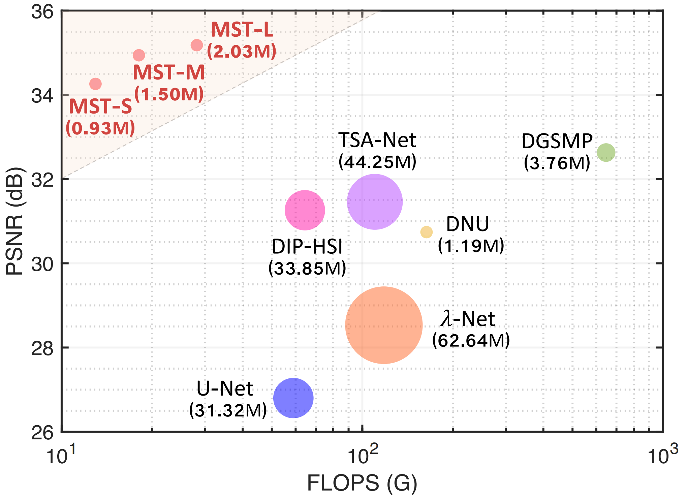
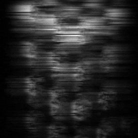
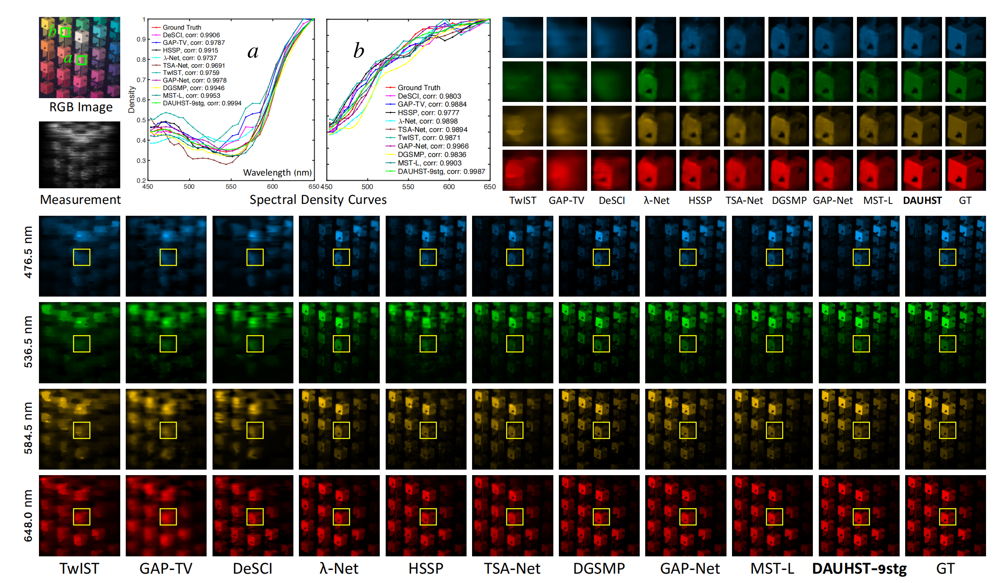
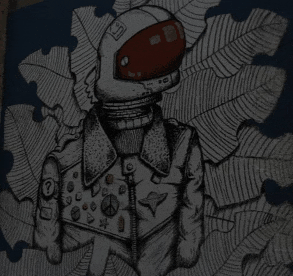

|
|
BiographyI am currently a 2nd-Year Master student in Shenzhen International Graduate School, Tsinghua University, under the supervision of Haoqian Wang. Currently, my research topic is Image/video-based 3D human motion perception and generation. Previously, I focused on low-level vision, e.g., image/video restoration, computational imaging.I got B.Eng. degree in Automation at Harbin Institute of Technology (Shenzhen). I worked as a research intern at Huawei (Noah's Ark Lab) with Xueyi Zou, and IDEA under the supervision of Ailing Zeng and Lei Zhang. I'm passionate about open-source code. Codes, models, and datasets of my works are released and have earned over 1.3K stars. Check out my GitHub page! I am an activate player in competitions of international top academic conferences and I have won the champion on NTIRE Spectral Recovery Challenge at CVPR2022, Third Place on NTIRE Video Super-Resolution Challenge at CVPR 2021. Our OSX ranks top-1 on AGORA benchark from Nov. 2022 to Apr. 2023. In the future, I hope to continue the research on computer vision and computer graphics (CV & CG), particularly in relation to 3d human motion, including motion perception (e.g., motion capture, pose estimation), generation (e.g., text/audio-driven motion generation), and understanding (e.g., human-object interaction). I am looking for a PHD position in Fall, 2024 (CV, Email). Please contact me if there are available positions in your lab. |
Publications
|  |
Motion-X: A Large-scale 3D Expressive Whole-body Human Motion Dataset

Jing Lin*, Ailing Zeng*, Shunlin Lu*, Yuanhao Cai, Ruimao Zhang, Haoqian Wang, Lei Zhang Preprint, Under Review Home [arXiv, Reader] |
|  |
One-Stage 3D Whole-Body Mesh Recovery with Component Aware Transformer

Jing Lin, Ailing Zeng, Haoqian Wang, Lei Zhang, Yu Li Computer Vision and Pattern Recognition 2023 (CVPR 2023) Home [arXiv, Reader] Video |
Flow-Guided Sparse Transformer for Video Deblurring

Jing Lin*, Yuanhao Cai*, Xiaowan Hu, Haoqian Wang, Youliang Yan, Xueyi Zou, Henghui Ding, Yulun Zhang, Radu Timofte, Luc Van Gool International Conference on Machine Learning 2022 (ICML 2022) Home [arXiv, Reader] |
|
|  |
Unsupervised Flow-Aligned Sequence-to-Sequence Learning for Video Restoration
Jing Lin*, Xiaowan Hu*, Yuanhao Cai, Haoqian Wang, Youliang Yan, Xueyi Zou, Yulun Zhang, Luc Van Gool International Conference on Machine Learning 2022 (ICML 2022) Home [arXiv, Reader] |
|  |
Mask-Guided Spectral-Wise Transformer for Efficient Hyperspectral Image Reconstruction

Yuanhao Cai*, Jing Lin*, Xiaowan Hu, Haoqian Wang, Xin Yuan, Henghui Ding, Yulun Zhang, Radu Timofte, Luc Van Gool Computer Vision and Pattern Recognition (CVPR 2022) Home [arXiv, Reader] |
|  |
Coarse-to-Fine Sparse Transformer for Hyperspectral Image Reconstruction
Yuanhao Cai*, Jing Lin*, Xiaowan Hu, Haoqian Wang, Xin Yuan, Yulun Zhang, Radu Timofte, Luc Van Gool European Conference on Computer Vision 2022 (ECCV 2022) Home [arXiv, Reader] |
|  |
Degradation-Aware Unfolding Half-Shuffle Transformer for Spectral Compressive Imaging
Yuanhao Cai*, Jing Lin*, Haoqian Wang, Xin Yuan, Yulun Zhang, Radu Timofte, Luc Van Gool Conference on Neural Information Processing Systems 2022 (NeurIPS 2022) Home [arXiv, Reader] |
|  |
MST++: Multi-stage Spectral-wise Transformer for Efficient Spectral Reconstruction

Yuanhao Cai*, Jing Lin*, Zudi Lin, Haoqian Wang, Yulun Zhang, Hanspeter Pfister, Radu Timofte, Luc Van Gool Conference on Computer Vision and Pattern Recognition Workshops 2022 (CVPRW 2022 Oral) Home [arXiv, Reader] |
Honors & Awards
- Winner of NTIRE Spectral Reconstruction Challenge at CVPR 2022
- Third Place of NTIRE Video Super-Resolution Challenge at CVPR 2021
- National Scholarship (2019)
- First Class Scholarship (2019, 2020, 2022)
Academic Service
- Reviewers of: CVPR, ECCV, ICCV, NeurIPS, ICME